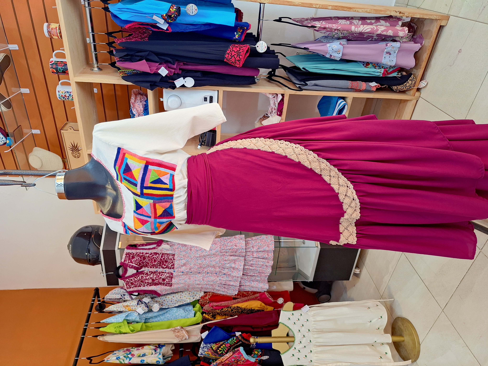
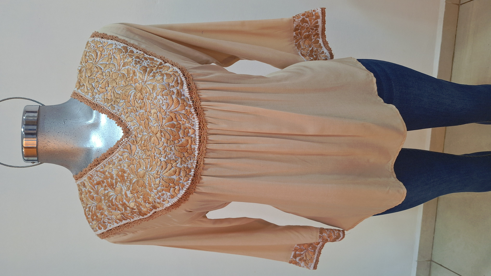

Un Espacio de Creación
Nuestro taller es el punto de encuentro entre la herencia ancestral y la creatividad contemporánea. Ubicado en el corazón de Ocotlán de Morelos, es un espacio luminoso donde nuestras artesanas transforman el tiempo en arte, dando vida a piezas únicas día tras día.
Al visitarnos, encontrarás un ambiente cálido que fusiona nuestro taller vivo con nuestra boutique. Entre hilos de colores vibrantes y maniquíes que lucen nuestras creaciones más recientes, podrás ser testigo de la dedicación que define a Casa Victoria.
Estamos siempre dispuestos a compartir la historia de nuestros diseños y las minuciosas técnicas de los Valles Centrales con las que elaboramos cada uno de nuestros productos.


